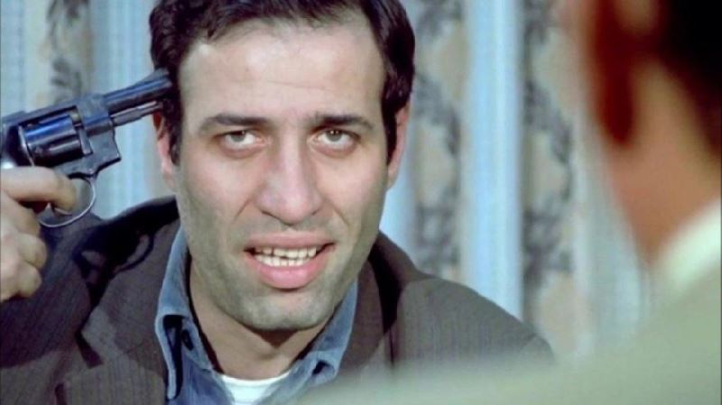

CONTACT


EDUCATION
Radyo, Televizyon ve Sinema
Marmara Üniversitesi İletişim Fakültesi1991-1995
SKILLS
Tiyatro
Sinema
Korkusuz Korkak
Sinema
Korkusuz Korkak
MÜLAYİM SERT
WANNA BE DEVELOPER
PROFILE
Bir şirkette masa başı bir işte çalışan ve fakir bir adam olan Mülayim, kirasını
bile ödeyememektedir. İş arkadaşları tarafından ezilen ve ev sahibi tarafından evden atılmakla
karşı
karşıya kalan Mülayim tam bu dönemde ölümcül bir hastalığa yakalandığını öğrenir. Doktor 6 ay
sonra
öleceğini, son günlerini dilediği gibi yaşamasını tavsiye eder.
WORK EXPERIENCE
MÜLAYİM SERT
KORKUSUZ KORKAK / 1979-1979
Birden değişen Mülayim iş arkadaşları ve patronu tarafından ezilmek bir yana, kendisi patron gibi davranmaya başlar. Mahalleye bırakılmış bir bomba ile oyuncak gibi oynayıp, patlattığı için bombacı Mülayim lakabı takılır. Ancak bu arada aldığı son piyango biletine büyük ikramiyenin çıktığını öğrenir. Altı ay ömrü kaldığını düşünerek, tüm parasıyla bir umumi tuvalet yaptırır. Bu arada mafya babası Ayı Abbas ile Mülayim arasında mücadele başlayacaktır. Ölmek için 6 ay beklemeye sabredemeyen Mülayim, Sansar Selim aracılığıyla kendisini öldürmek üzere Gaddar Kerim'i tutar. Kerim, Abbas'ın adamlarını bertaraf eder. Bu arada aslında gayet sağlıklı olduğunu, doktorun bir hata yaptığını öğrenen Mülayim artık eskisi gibi korkusuz değildir. Hemşire Sevil, Mülayim'e yardımcı olur ama Mülayim korkusunu engelleyemez. Etrafındaki herkesi, kendi tuttuğu ve kimliğini bilmediği kiralık katil sanmaktadır. En sonunda Gaddar Kerim ve Ayı Abbas tarafından sıkıştırılan Mülayim tuhaf bir şekilde her ikisinin elinden de kurtulacaktır.
KORKUSUZ KORKAK / 1979-1979
Birden değişen Mülayim iş arkadaşları ve patronu tarafından ezilmek bir yana, kendisi patron gibi davranmaya başlar. Mahalleye bırakılmış bir bomba ile oyuncak gibi oynayıp, patlattığı için bombacı Mülayim lakabı takılır. Ancak bu arada aldığı son piyango biletine büyük ikramiyenin çıktığını öğrenir. Altı ay ömrü kaldığını düşünerek, tüm parasıyla bir umumi tuvalet yaptırır. Bu arada mafya babası Ayı Abbas ile Mülayim arasında mücadele başlayacaktır. Ölmek için 6 ay beklemeye sabredemeyen Mülayim, Sansar Selim aracılığıyla kendisini öldürmek üzere Gaddar Kerim'i tutar. Kerim, Abbas'ın adamlarını bertaraf eder. Bu arada aslında gayet sağlıklı olduğunu, doktorun bir hata yaptığını öğrenen Mülayim artık eskisi gibi korkusuz değildir. Hemşire Sevil, Mülayim'e yardımcı olur ama Mülayim korkusunu engelleyemez. Etrafındaki herkesi, kendi tuttuğu ve kimliğini bilmediği kiralık katil sanmaktadır. En sonunda Gaddar Kerim ve Ayı Abbas tarafından sıkıştırılan Mülayim tuhaf bir şekilde her ikisinin elinden de kurtulacaktır.